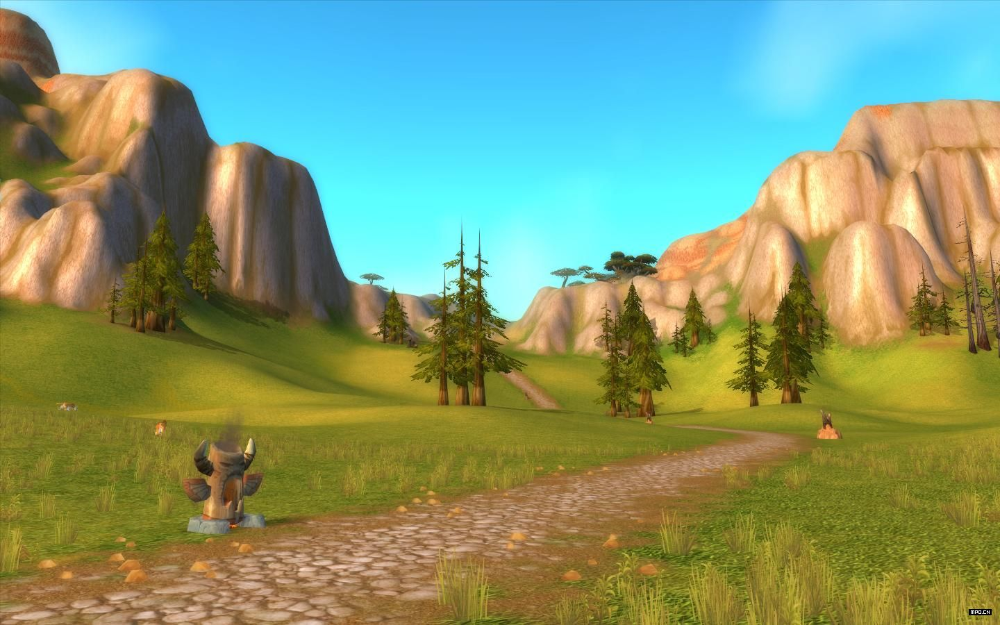
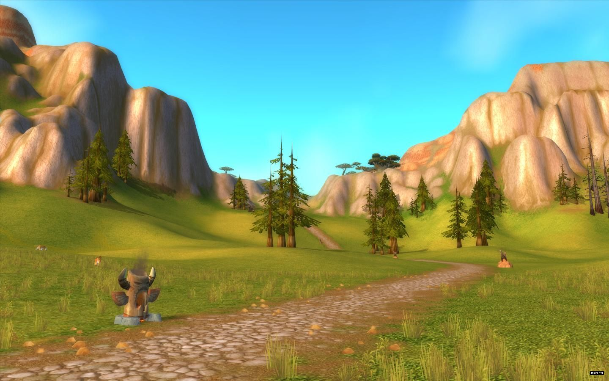
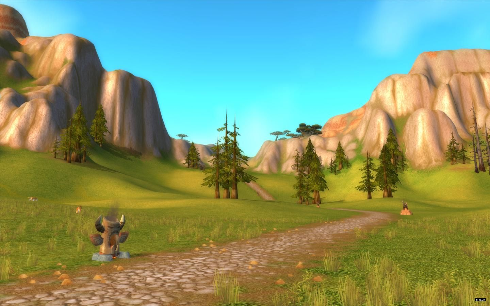

Lok-Tar Ogar。
天那!你真高!
时间就是金钱,我的朋友
纳鲁没有忘记我们。

function deepClone(obj) {
var result,oClass = isClass(obj);
if(oClass == 'Object'){result={}}
else if(oClass == 'Array'){result=[]}
else{return obj}
for(var key in obj) {
var copy = obj[key];
if(isClass(copy) === 'Object' || isClass(copy) === 'Array'){
result[key] = arguments.callee(copy)
}else{
result[key]=obj[key];
}
}
return result;
}
function isClass(obj){
if(o===null) return "Null";
if(o===undefined) return "Undefined";
return object.prototype.toString.call(obj).slice(8,-1);
}